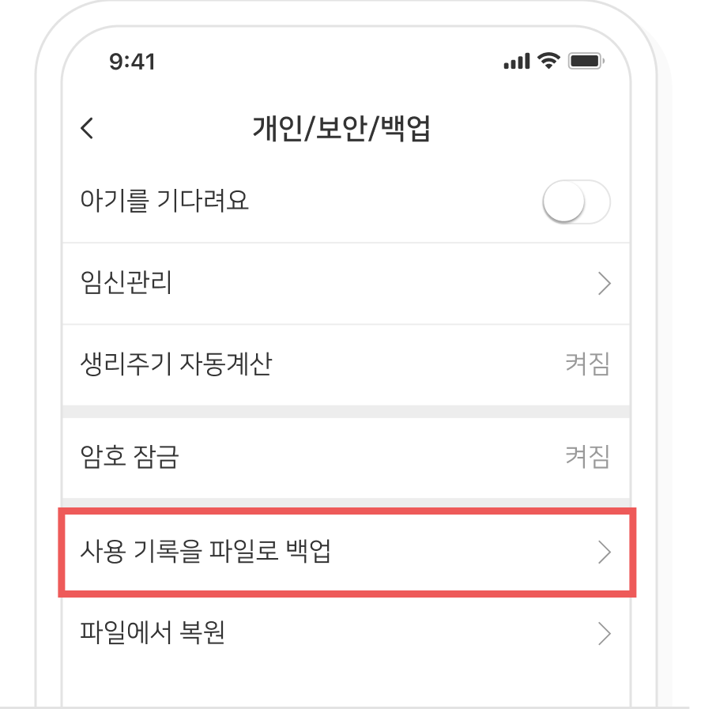
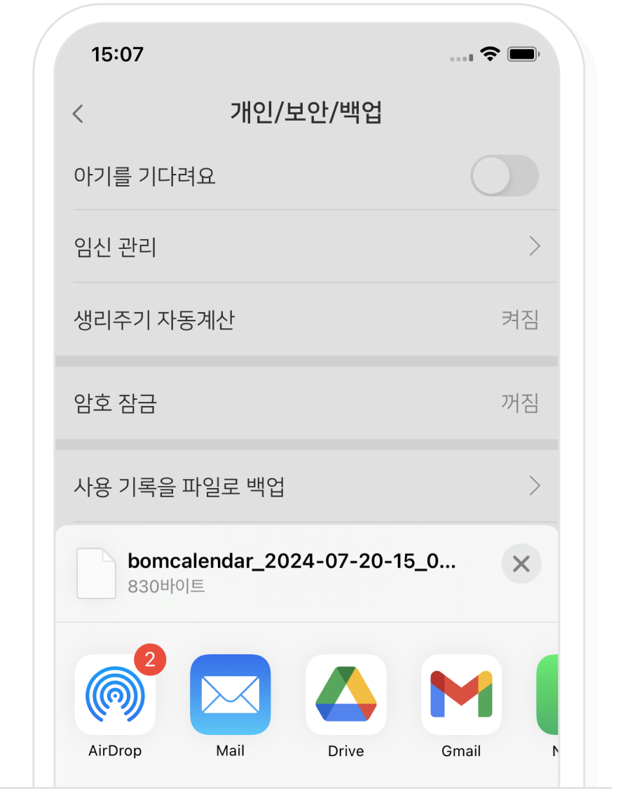
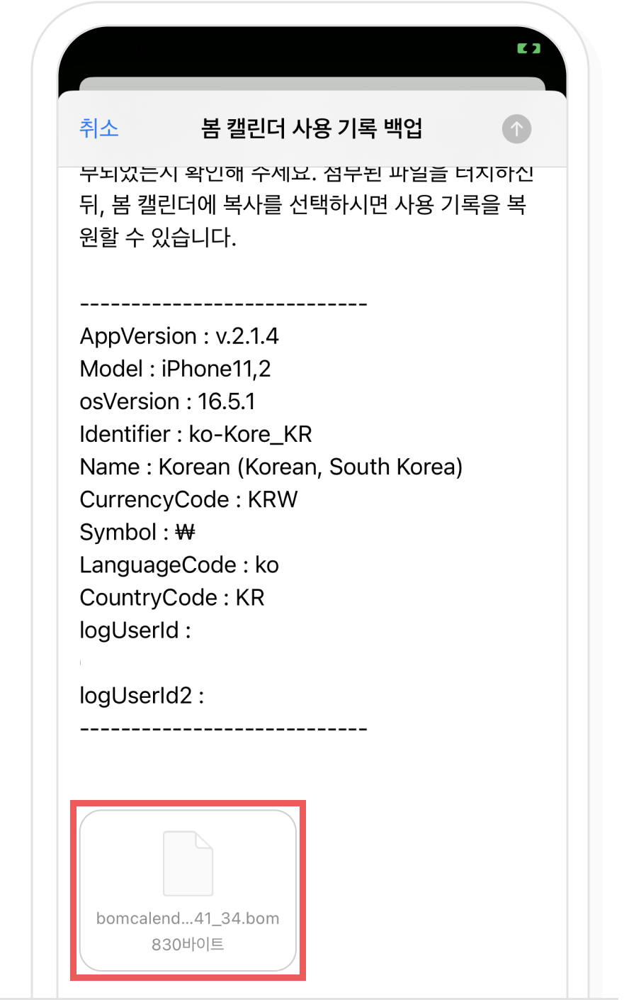
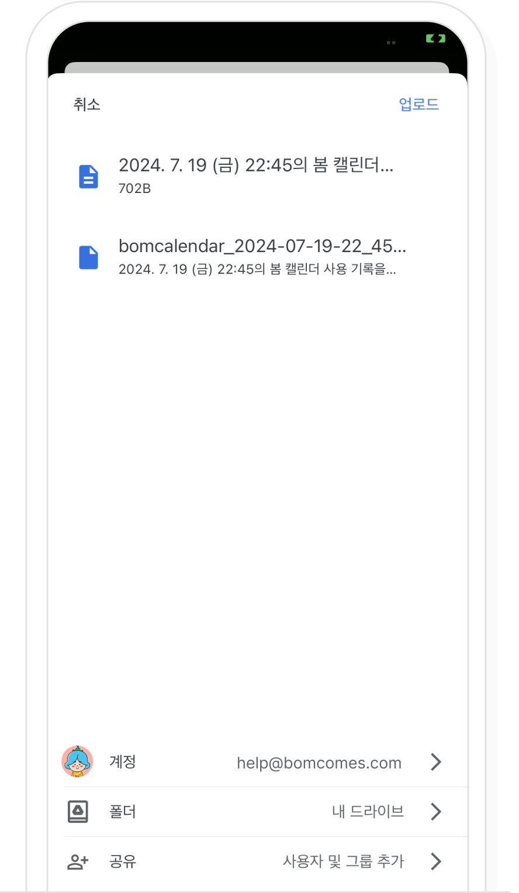
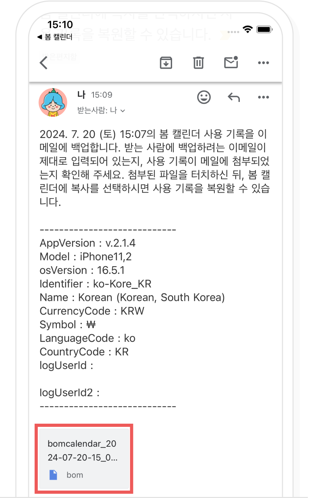
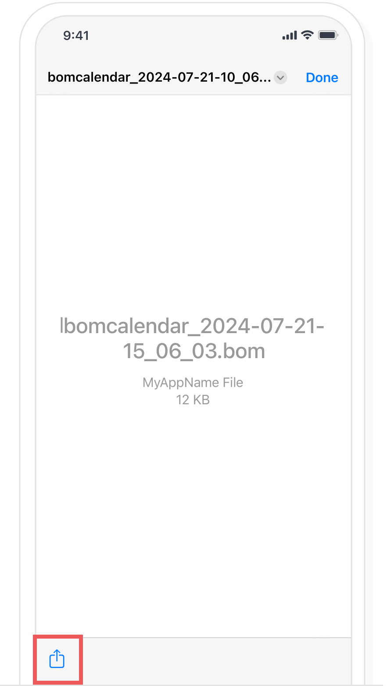
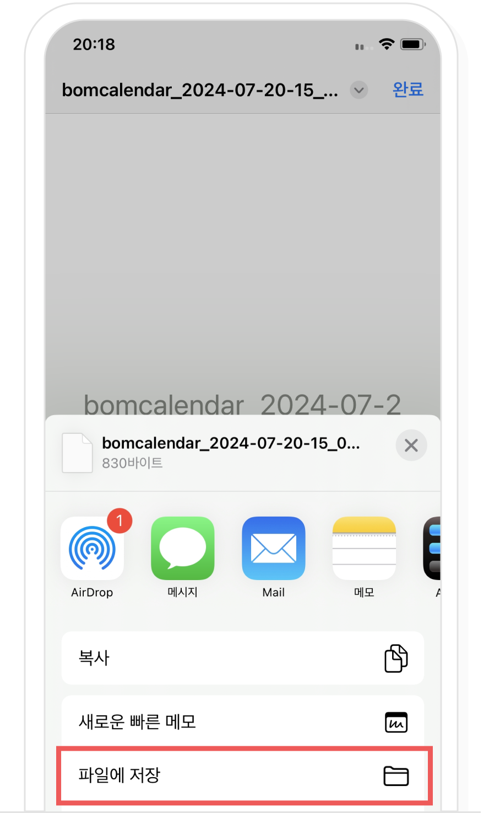
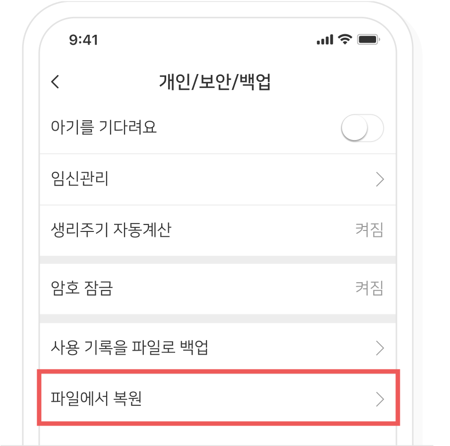
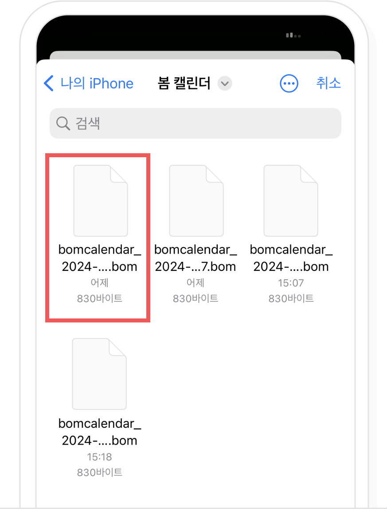
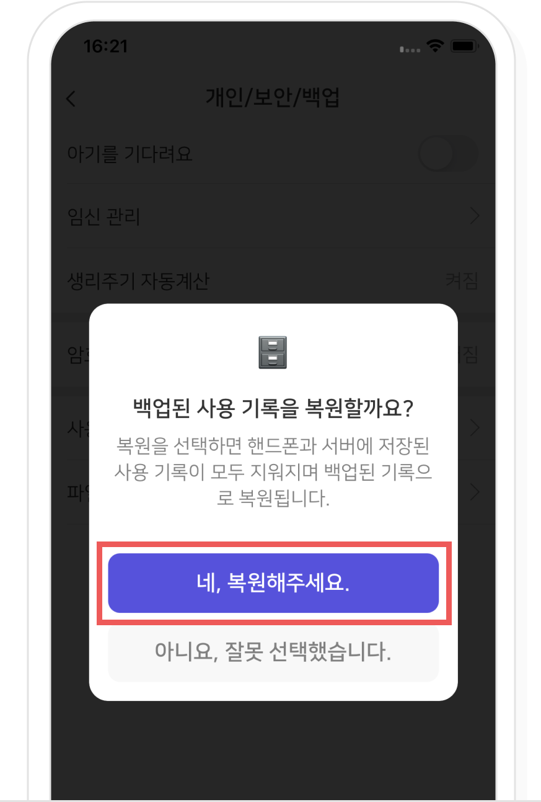

-
1
백업하기
봄 캘린더 설정 > 개인/보안/백업에서 '사용 기록을 파일로 백업'을 선택해주세요.
백업하려는 메일이나 클라우드 어플을 선택해주세요.
백업을 메일에 하려면 사용 기록이 메일에 첨부되었는지 확인하고, 받는 사람에 백업할 이메일 주소를 입력한 뒤 메일 발송을 선택해주세요.
메일을 발송하면 받는 메일로 사용 기록 파일이 보내집니다.백업을 클라우드에 하려면 저장하려는 계정이 맞는지 확인 후 ‘업로드(저장)’을 선택해주세요.
‘업로드(저장)’을 선택하면 클라우드에 사용 기록 파일이 저장됩니다. -
2
복원하기
백업을 메일에 했다면 메일을 선택한 뒤 첨부된 사용 기록 파일을 선택해주세요.
‘파일에 저장'을 선택해 주세요.
봄 캘린더 설정 > 개인/보안/백업에서 '파일에서 복원'을 선택해주세요.
복원할 파일을 선택해 주세요.
복원 확인 팝업에서 ‘네 복원해주세요.’ 버튼을 선택하면 복원이 완료됩니다.
